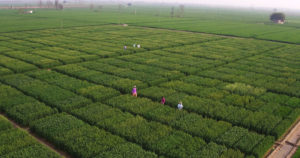
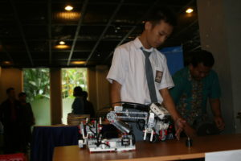
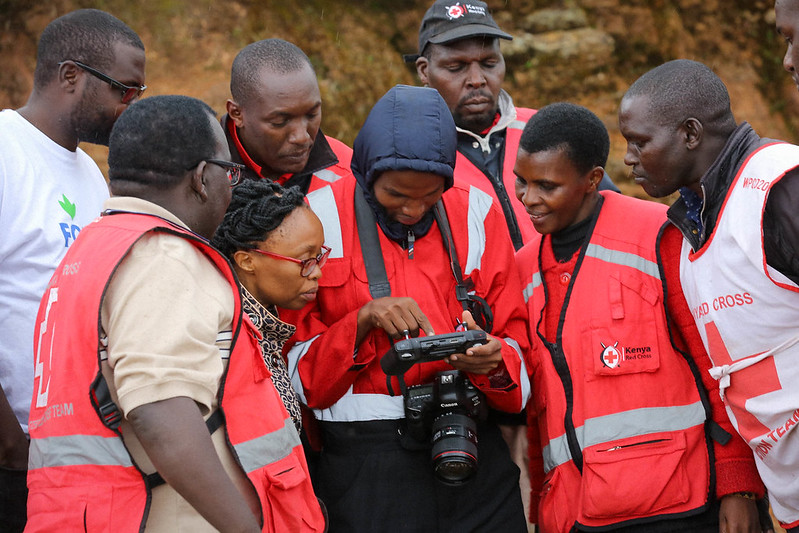
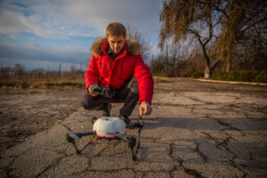

Robots & Drones
What are robots and drones?
The word “robot” can bring to mind images of androids and cyborgs — a dystopian universe of machines living among humans. In reality, the field of robotics is vast and diverse: robots are simply programmable devices that can perform tasks with a certain degree of autonomy. Equipped with sensors, robots can make decisions based on their physical surroundings. In many areas of application, robots are increasingly being driven by artificial intelligence.
Drones, meanwhile, are typically lightweight vehicles mounted with a host of sensors, a GPS system, a power source, an antenna, controllers, and components that enable them to fly. Like other robots, drones function with different levels of autonomy, ranging from fully autonomous ones to those piloted by a human from the ground.

Robots and drones are used for myriad purposes: in industrial environments, education, hospitality, medicine and healthcare, retail, search and rescue, disaster relief and recovery, home automation, military applications, farming, personal assistance, surveillance, and exploration, among others. Robots and drones can be seen as a combination of different technologies (including automation, IoT, big data, and artificial intelligence) and engineering in order to carry out actions with limited human oversight.
How do robots and drones work?
Robots are fitted with sensors that enable them to “feel” and navigate their surroundings, similar to a human who can see, hear, touch, and smell. Some robots, such as a robotic flowerpot, are stationary while others can fly (like drones), hover, walk, run, crawl, jump, slither, swim, or perform a variety of movements.
Robots are autonomous to varying degrees. Some are completely controlled by humans and do not make decisions on their own — for instance, some factory robots operate only within the strict confines of the factory environment, performing simple, repetitive movements controlled by humans.
Semi-autonomous robots operate to some extent without human control and may be able to make their own decisions in some scenarios and conditions — for example, a vacuum cleaning robot.
Fully autonomous robots are capable of operating and making decisions without human control or intervention, for instance, self-driving cars, which are one of the many kinds of driverless/pilotless robotic vehicles. Some robots are even capable of learning on their own, correcting their responses, behaviors, or actions based on data and/or the responses of their users: for instance, industrial robots that use artificial intelligence and share data with one another to improve their performance, essentially reprogramming themselves.

Finally, some robots are designed to recognize principal human emotions based on the facial expressions of their users, changing their actions or behaviors in response. Of course, this kind of robot emotional intelligence remains experimental (accuracy cannot always be guaranteed) and raises important ethical questions (see the Risks section).
Drones are robots equipped with motors and sensors that enable them to fly, navigate and gather data. They can either fly autonomously or under the control of a human operating from the ground, usually over a radio communication system. Originally used by the military, drones have found their way into civilian applications in the past few years. The technical terms for drones include UAV (unmanned aerial vehicle), UAS (unmanned aircraft systems), un-crewed aircraft vehicle/systems, RPAV (remotely piloted aerial vehicle), and RPAS (remotely piloted aircraft system).
How are robots and drones relevant in civic space and for democracy?
Drones and robots have a wide range of applications in the civic space. In disaster response and preparedness, search and rescue robots and drones can be used to locate survivors trapped in earthquake debris or floods and provide real-time data and sensory outputs to relief and rescue operators. This short video by the Centre for Robot-Assisted Search and Rescue chronicles the use of robots in different disaster situations that occurred worldwide between 2001 and 2017.
Drones have also been used by the United Nations Development Programme (UNDP) and its local partners to map Mauritius, monitor Mali’s post-crisis recovery, and help island communities in Maldives prepare for and respond to disasters related to rising sea levels and coastal storms. During the Covid-19 outbreak, several cities used drones to spray disinfectant in public spaces and to measure people’s body temperature. This video by FSD offers more examples of drones in humanitarian action.

Robots and drones can be beneficial to areas of the economy and society. Robots can be used to carry out other tasks that are too dangerous for humans, such as handling biohazardous material, detecting landmines and explosives, and marking them for removal or detonating them. They also assist with tasks that surpass human capabilities: for example, tiny robots can navigate gaps, pockets, and crevices in underground mines that are too small for humans. In the agricultural sector, drones have been used to spray pesticides, detect crop height, and track changes in crops across farmlands. Drones are also used by journalists and researchers. For example, in 2018, the BBC shot a drone video uncovering for the first time detention camps at the US-Mexico border where migrant children were being held after being separated from their families.
Robots have many emerging uses in healthcare and therapy. For example, they can assist with daily tasks, like food preparation, or reminders to take medicine. They can also enhance prosthetic limbs: this video by the Guardian explores different kinds of robotic prosthetics enabled by “bionic technology.” Robots can serve as assistants in medical procedures and surgeries and as nurses. Some robots can even resemble human or animal forms and be used to provide emotional support, aid, or therapy. For example, PARO, a therapy robot that resembles a harp seal, has been used in the care of elderly patients with dementia. Because these are novel technologies, not enough is known about their effects on patients; most research is theoretical, and it does not account for the patient’s perspective. Still, robots in healthcare and assistance are growing fields of research and investment. For more, see this position paper on “Assistive technology and people.”
The use of drones in warfare (unpiloted aerial vehicles) raises serious human-rights issues: despite their supposed super accuracy, drones can accidentally harm and kill civilians and people other than their targets. Drones identify their targets based on metadata from electronic devices (location data from a cell phone, for example), which can lead to the killing of innocent people. These risks are important to consider regarding non-military drones’ usage because non-military drones relying on metadata can similarly identify the wrong individuals. For more information on military use, see the Risks section.

The different applications of drones and robots each have their own implications for society and democracy. Essentially, drones and robots reduce direct human involvement in different processes, which can be a benefit or a risk depending on the task and the design of the operation.
Opportunities
Robots and drones can have positive impacts when used to further democratic governance and to protect, respect, and fulfill human rights. Read below to learn how to more effectively and safely think about these technologies in your work.
Carrying out hazardous or degrading tasksRobots and drones can replace humans in carrying out dangerous tasks (for example, those involving the possibility of accidental exposure to nuclear radiation or the detection of landmines in the desert); those that may require hard physical labor in places such as stone quarries or mines; and those with the risk of occupational injuries. Tiramisu, a humanitarian demining project in Europe, deploys a range of robotic vehicles to detect landmines and explosives. Robots can also do work that is detrimental to human health and dignity. For example, some states in India are replacing the activities of manual scavenging and cleaning sewer lines with the use of robots. Robots may even be able to perform some jobs that would put humans in danger of contracting the Coronavirus. During the Covid-19 outbreak, a café located in Daejeon, South Korea deployed robot workers to prepare and serve coffee to customers, thus limiting the interaction between humans. Drones, in turn, are being used for the delivery of essential supplies within healthcare environments and for people quarantined to lower human exposure to Covid-19.
Robots and drones can help improve the speed, efficiency, and coverage of service delivery and help reduce human error, save time, and minimize costs. In the Philippines, drones collected imagery to inform reconstruction and rebuilding efforts following Typhoon Haiyan. In Nepal, they were used to map terrain vulnerable to landslides in the wake of two earthquakes in 2015.
Tasks that require physical strength, endurance, speed, precision, etc., beyond human capabilities may be achieved via robotic automation systems, for example, moving extremely heavy objects, or observing and adjusting minute objects with precision, as in some surgical procedures.
Risks
The use of robots and drones can also create risks in civil society programming. Read below on how to discern the possible risks associated with the use of these technologies in DRG work.
Labor issues (“technological unemployment”)When robots, AI, and other automated technologies are used to replace monotonous, repetitive, or low-skilled human labor, the resultant loss of jobs can cause structural unemployment known as “technological unemployment.” Structural unemployment disproportionately affects women, lower economic classes, and other vulnerable members of society, unless they are re-skilled and given adequate protections. Automation also requires skilled labor that can operate, oversee or maintain automated systems, eventually creating jobs for a section of the population. The overall effect of robots and drones on employment is not yet clear, but the immediate impact of this transformation of work can be harmful to people and communities without social safety nets or opportunities for finding other work.
Drones can be powerful surveillance and stalking tools. When combined with other technologies such as facial recognition, drone images captured from public protests can be used to individually identify protestors. Unregulated collection and storage of drone imagery from civilian spaces may facilitate mass surveillance. Paparazzi and stalkers can use discreet, small-sized-camera drones to secretly surveil their targets. Among the countries that have imposed an outright ban on the civilian use of drones, some have cited fears of terrorism, aerial accidents, or other safety issues.
Drones are beginning to be regulated in many countries to prevent accidents, breaches of personal privacy, trespass, voyeurism, and other illegal activities. Regulatory requirements include safety procedures and details such as the height at which drones can be flown, their weight, functions, distance, and placement from other aerial vehicles, among other things. Laws and regulations covering drones are evolving in most of the world and largely being incorporated into existing aviation regulatory frameworks, but there are still many legal grey areas and enforcement challenges.
The autonomous behaviors and decision-making capabilities of robots raise many ethical considerations, especially in the areas of liability (legal responsibility) and privacy. For example:
- Who should determine the tasks and responsibilities that a robot can carry out safely, that is, without harming humans or restricting their rights, and how do they determine this?
- Should robots be permitted to try to interpret human emotions? If robots are interpreting the emotions of human employees working beside them, should they be permitted to use or store this information?
- What is the permissible margin of error for a robot assisting in a medical surgery? Who is legally responsible for this operation?
- If existing laws and regulations do not apply or are indeterminate, how do we regulate the behaviors and responsibilities that robots are assigned?
- Do we need unique laws for robots, that is, laws that specifically govern the behavior of robots, and assign liability or responsibility to those who design, manufacture, and use them?
“Robotics combines, for the first time, the promiscuity of data with the capacity to do physical harm; robotic systems accomplish tasks in ways that cannot be anticipated in advance; and robots increasingly blur the line between person and instrument.”
Robots and drones generally collect data: when these are personal data (for instance, health data, data about employees work performance, data about individuals’ locations and interactions, etc.) there are significant concerns about data misuse or data breach. Drones are particularly feared for their capacity to invade personal privacy because they can survey spaces that human intruders would not have been able to access. Because they are relatively inexpensive and relatively quiet, drones can be used for spying. This kind of undetected surveillance can be performed by civilians or by government or police forces. Further, like other digital devices, robots, and drones are vulnerable to hacking and cyberattacks, data breaches, and simply design flaws and malfunctioning.
Also known as “killer robots,” fully autonomous weapons can select and kill human targets without requiring human control or intervention. Armed drones remotely operated by humans were used in drone strikes carried out by the United States on terrorism suspects residing in other countries from 2009 to 2016, as revealed in investigations by The Intercept and The Bureau of Investigative Journalism. The United States has the most military drones of any country, but other militaries are also acquiring drones as well. The increased use of drones in warfare should be an alarm bell for human-rights defenders around the world.
As Human Rights Watch, which runs the Campaign to Stop Killer Robots, notes on its website: “Leading AI experts, roboticists, scientists and technology workers at Google and other companies—are demanding regulation. They warn that algorithms are fed by data that inevitably reflect various social biases, which, if applied in weapons, could cause people with certain profiles to be targeted disproportionately. Killer robots would be vulnerable to hacking and attacks in which minor modifications to data inputs could ‘trick them in ways no human would ever be fooled’.”
Questions
If you are trying to understand the implications of robots and drones in your work environment, or are considering using these technologies as part of your DRG programming, ask yourself these questions:
-
Is a robot or a drone the best method for the problem you are trying to solve? How do you know?
-
Is there sufficient human oversight of the robots, and do the humans have sufficient training and understanding of the robots’ functioning? How will you ensure that humans are overseeing any important decision made using robotics? Who is liable legally in case of an accident?
-
Do you and all actors operating the technology fully understand how the robot functions, how it is learning and basing its decisions, etc? Are there any “black boxes” or unknown elements? Is there any potential for bias or other malfunctioning?
-
What data will the robot be collecting, processing, and storing? Are appropriate safeguards and security measures in place, particularly if any personal data are being collected?
-
Do you have sufficient security measures in place — regarding personal privacy, cybersecurity, and also physical security of operators and employees in proximity?
-
What are the long-term effects of using robots in the surrounding environment or community, for example, on jobs, salaries, social welfare, etc.? How will you mitigate any negative effects? What measures are necessary to ensure that the use of this technology does not aggravate or reinforce inequality?
-
How do the people working with the robots or receiving aid from the robots feel about them? Do you have reason to fear any negative psychological effects from this relationship, in the short or long term?
-
How will you abide by the General Data Protection Regulation (GDPR) or other applicable regulations, for instance, laws about harassment and voyeurism?
-
Drone regulation is evolving rapidly around the world, so it is important to stay up to date on the latest developments to ensure that you are operating within the boundaries of legality. Do you know the local policies and regulations, including aviation regulations, applicable to drones in the territory where you will be operating?
Case studies
Therapeutic robot PARO in care settingsPARO (a baby harp seal robot) was designed as a pet therapy for older people with dementia. According to a review of academic literature about PARO, the benefits of using the robot in these settings included “reducing negative emotion and behavioral symptoms, improving social engagement, and promoting positive mood and quality of care experience.”
Drones in Humanitarian and Environmental Applications, The Swiss Foundation for Mine Action (FSD). The website, now defunct but viewable at Archive.org, has published several case studies about the use of drones. In Case Study No. 12. drones are used in fire and rescue services in the United Kingdom. “The primary objective was to improve the safety of personnel… At one point during the trial, a drone accompanied several firefighters inside a building and was able to detect that the firefighters were working on an unsupported wall – which could have had disastrous consequences. The drone operator informed the team, and they took measures to ensure their safety.”
Blood Deliveries via Drones in Rwanda
Drones have been used by the Rwandan government with the help of Zipline to deliver blood to health facilities in a timely manner. The program began in 2016 and has led to decreases of blood expiration and delivery time, vital metrics when lives are on the line. The drones can make up to 500 deliveries per day and access remote areas that may otherwise be inaccessible given difficult weather and traffic conditions.
Drones help fight airborne diseases such as Zika in Brazil
The UN International Atomic Energy Agency, WeRobotics, and the UN Food and Agriculture Organization are using robots to fight mosquito-borne diseases. Their drone-based mechanism applies the Sterile Insect Technique (SIT), a form of insect birth control, which uses radiation to sterilize male mosquitos that are then released to mate with wild females. As these do not produce any offspring, the insect population declines over time.
Robots are being used for the delivery of essential supplies within healthcare environments and for people quarantined to lower human exposure to Covid-19. Danish company UVD Robots shipped robots to Chinese hospitals to disinfect rooms, and when fully deployed, the robots will operate in all Chinese provinces. These robots emit an ultraviolet light throughout an area to kill viruses and bacteria without exposing any human personnel to infection.
Amazon puts robots to work in fully automated factory, 2022
Robots have increasingly been used by companies in warehouses to assist with order fulfillment and packaging needs often taking over tedious tasks. Amazon has long been associated with the pioneering of automated systems in warehouse and delivery and in 2022 introduced the first ever fully automated warehouse robot. The system comprises two robots, Proteus and Cardinal, a floor system and robotic arm, that help lift heavy packages, and scan and shelf packages, reducing the need for workers to undertake potentially harmful activities. The goal, as the company notes, is that the use of robots in warehouse settings will ultimately allow staff to focus on more rewarding tasks.
References
Find below the works cited in this resource.
- Calo, Ryan, (2015). Robotics and the Lessons of Cyberlaw. California Law Review, Vol. 103, No. 3, pp. 513-63; University of Washington School of Law Research Paper No. 2014-08.
- Catholic Relief Services, (2017). 11 Cost-effective uses of drones in ICT for agriculture. ICTWorks.
- Jones, Therese, (2017). International Commercial Drone Regulation and Drone Delivery Services. RAND Corporation.
- Lauk, Epp, et al. (2016). Drone journalism: The newest global test of press freedom. In: Carlsson, Ulla ed. (2016). Freedom of Expression and Media in Transition: Studies and Reflections in the Digital Age. Nordicom, pp. 117-125.
- Leenes, Ronald, et al., Regulatory challenges of robotics: some guidelines for addressing legal and ethical issues, (2017). Law, Innovation and Technology, 9:1, 1-44.
- Levush, Ruth, (2016). Regulation of drones: Comparative analysis. Library of Congress.
- Purkiss, Jessica & Jack Serle, (2017). Obama’s covert drone war in numbers: ten times more strikes than Bush. The Bureau of Investigative Journalism.
- Robert, Eric, (2011). Computers and robots: Decision-makers in an automated world. Stanford University.
- Scahill, Jeremy, et al., (2015). The drone papers. The Intercept.
- Soesilo, Denise & Timo Luege, (2016). How drones can help in humanitarian emergencies. ICTWorks.
- Stauffer, Brian, (2020). As killer robots loom, demands grow to keep humans in control of use of force. Human Rights Watch.
- Desmond, Deirdre. (2018). Assistive technology and people: a position paper from the first global research, innovation and education on assistive technology (GREAT) summit. Disability and Rehabilitation: Assistive Technology 13(5), pp. 437-444.
Additional resources
- CJI Enterprise, (n.d.). How are drones helping?
- Doctorow, Cory, (2014). Why it is not possible to regulate robots. The Guardian.
- The Swiss Foundation for Mine Action (FSD). (2017). Drones in Humanitarian Action.
- Müller, Vincent, (2020). Ethics of artificial intelligence and robotics. Stanford Encyclopedia of Ethics.
- Murphy, Robin, et al., (2008). Search and rescue robotics. Springer Handbook of Robotics, pp. 1151-1173.
- Purtill, Corinne, (2019). The robot that could change the senior care industry. Time Magazine.
- Riek, Lauren D., (2015). Robotics technology in mental health care. In D. Luxton, ed. Artificial Intelligence in Behavioral Health and Mental Health Care. Academic Press, pp. 185-203.
- Rigotti, Carlotta, (2019). Sex robots: A human rights discourse?
- Simon, Matt (2017). What is a robot?
- Trevelyan James, Hamel, William R. & Sung-Chul Kang. (2008). Robotics in Hazardous Applications In: Siciliano, Bruno & Oussama Khatib, eds. Springer Handbook of Robotics, pp. 1521-1548.